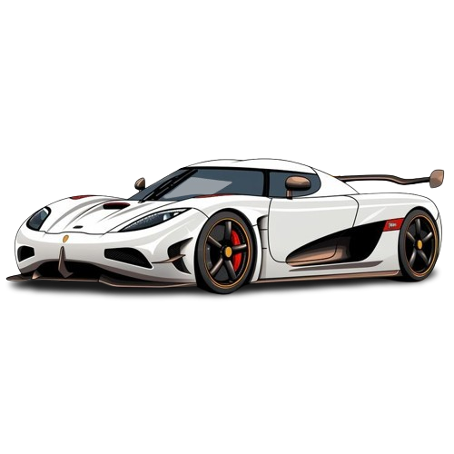
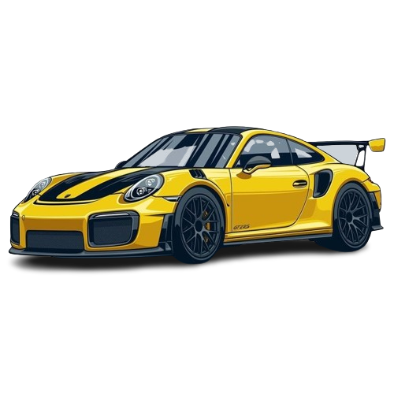
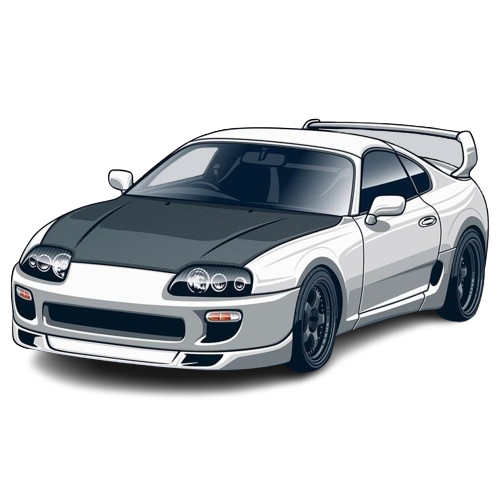
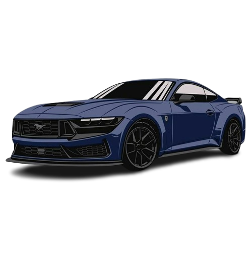
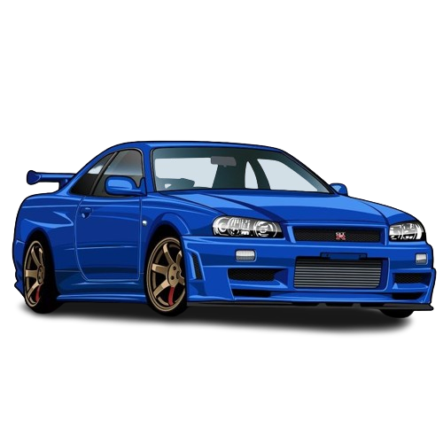

-
Koenigsegg Agera R
Descrição
O Koenigsegg Agera R é uma obra-prima da engenharia automotiva, conhecido por seu desempenho extremo, design aerodinâmico e tecnologia inovadora. Sob o capô traseiro, o Agera R abriga um poderoso motor V8 biturbo de 5.0 litros, capaz de produzir uma potência impressionante. Este motor é capaz de acelerar o carro de 0 a 100 km/h em questão de segundos, com uma velocidade máxima que desafia os limites convencionais.
-
Porsche 911 GT3
Descrição
A Porsche 911 GT3 RS é uma máquina impressionante, projetada para oferecer desempenho excepcional na pista. Combinando a icônica silhueta do 911 com tecnologia de corrida de ponta, esta variante eleva o desempenho a outro nível. Externamente, é facilmente reconhecível pelos seus aerofólios pronunciados, entradas de ar agressivas e uma postura baixa e larga. Cada detalhe foi cuidadosamente projetado para melhorar a aerodinâmica e a estabilidade em altas velocidades.
-
Toyota Supra
Descrição
O Toyota Supra é mais do que apenas um carro, é um símbolo de potência, elegância e emoção que continua a cativar entusiastas de carros em todo o mundo. Além de sua potência impressionante, o Supra é conhecido por sua excelente dirigibilidade e manuseio. Seu design aerodinâmico, suspensão ajustável e tração traseira contribuem para uma experiência de condução envolvente e emocionante em estradas sinuosas e pistas de corrida.
-
Ford Mustang
Descrição
O Ford Mustang é um ícone no mundo dos carros esportivos, Uma das características mais notáveis do Mustang é seu desempenho poderoso. Com uma variedade de opções de motores, que vão desde motores V6 até potentes V8, o Mustang oferece uma ampla gama de potência e torque. Sua capacidade de aceleração rápida e velocidade máxima impressionante fazem dele um dos carros esportivos mais emocionantes de se dirigir.
-
Nissan Skyline R34
Descrição
O Nissan Skyline R34 é um icônico carro esportivo japonês que fez sua estreia em 1999 e foi produzido até 2002. Ele é amplamente aclamado por sua combinação de desempenho excepcional, design distintivo e legado na cultura automotiva. O R34 Skyline é frequentemente reverenciado por sua aparência agressiva e aerodinâmica, com linhas elegantes e detalhes marcantes que o tornam instantaneamente reconhecível. Possui uma carroceria de cupê de duas portas, com elementos de design inspirados no mundo das corridas, como o famoso spoiler traseiro e as entradas de ar dianteiras.